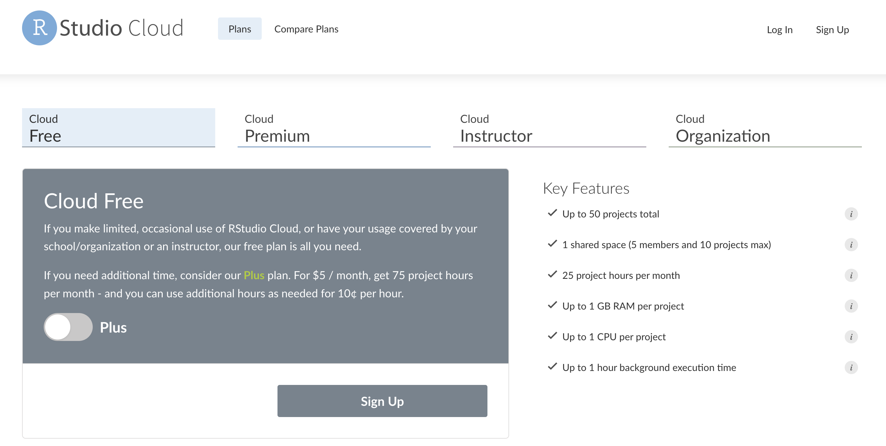

Data Visualization with
ggplot2
A talk for ODSC East, 2022

Read the preview full blog post here.
Getting setup with RStudio.Cloud
1. Create a GitHub account (it’s free!)

2. Create RStudio.Cloud account (also free!)

3. Use your GitHub credentials to log into RStudio.Cloud
Materials
Part 1: thinking with graphs
Exploratory data analysis
- What is it, who does it, and why it’s important
A Bayesian mindset
- Priors -> new information -> posteriors
The grammar of graphics
- Layers, aesthetics, and geoms
Part 2: creating graphs with ggplot2
Build labels first
- Set expectations
Exercises & solutions
Creating graphs
- Building graphs layer-by-layer, global vs. local mapping, visual encodings
Applying the grammar
- Mapping vs. setting aesthetics, combining layers, facets
Read previous
tutorials I’ve written on ggplot2.